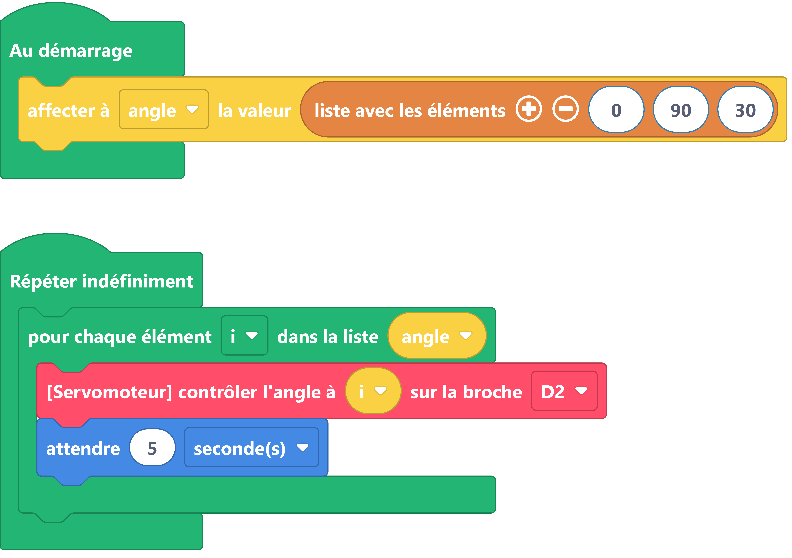

Boucle itérative¶
Dans le cas de processus redondants, plutôt que d'écrire le processus de multiple fois avec des paramètres différents, il est préférable d'utiliser une boucle avec variable (for ) ainsi qu'une ou plusieurs listes ou sont stockées toutes les variables nécessaires.
La boucle for se charge de la structure du processus. La(les) liste(s) s'occupe(nt) des données. A chaque entrée dans la boucle on vient chercher dans la ou les listes, les paramètres du prochain cas.
Exemples¶

Aller plus loin¶
Dans l'exemple ci-dessus, nous utilisons les fonctions du langage MicroPython def, for et if else.
Pour en savoir plus sur def, nous vous invitons à lire la documentation MicroPython.
Pour en savoir plus sur for in, nous vous invitons à lire la documentation MicroPython.
Pour en savoir plus sur if else, nous vous invitons à lire la documentation MicroPython.